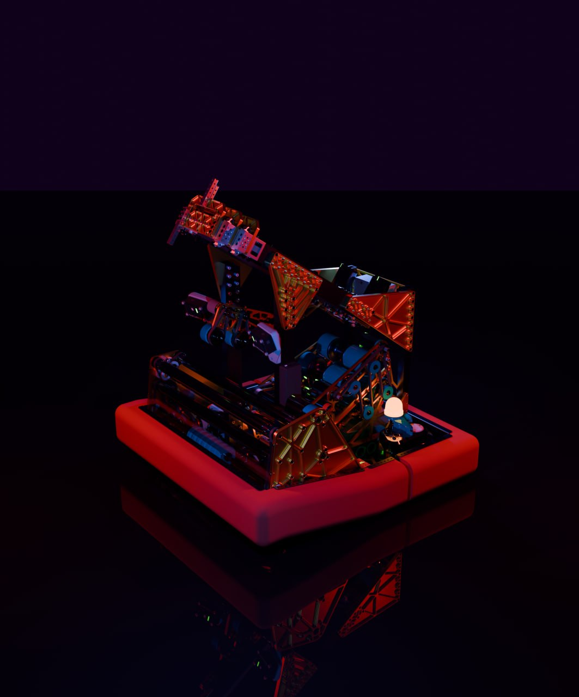

Drag left/right - the high-detail CAD fills in from the left as you drag right, with the block CAD remaining on the right until fully revealed.
A CADathon entry built under the theme "Crystal Caverns." The slider above shows the design's progression from block CAD - laying out the mechanism's rough geometry and motion - to the fully detailed version with real parts, fasteners, and finish.

1 / 1